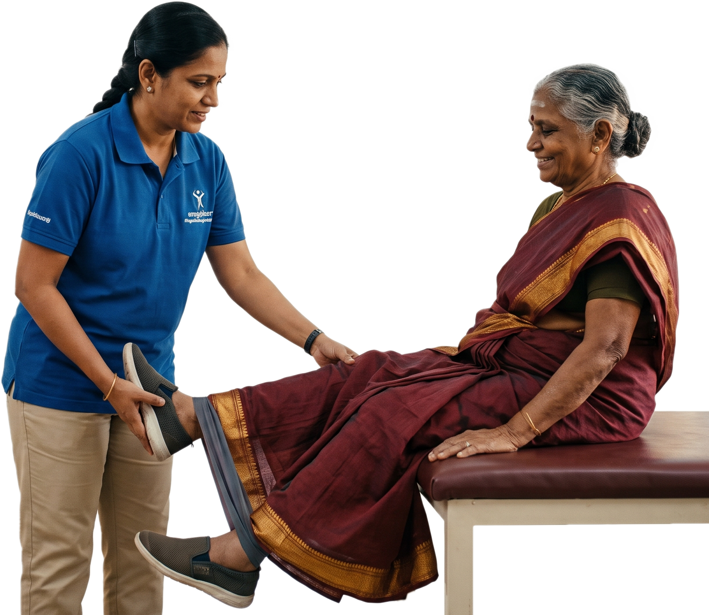
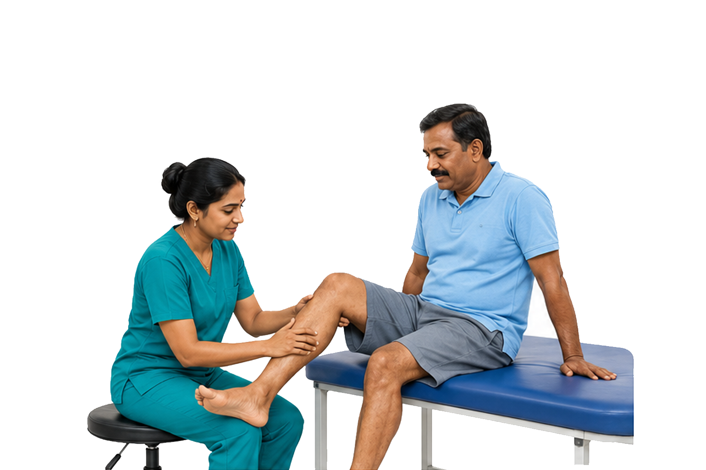
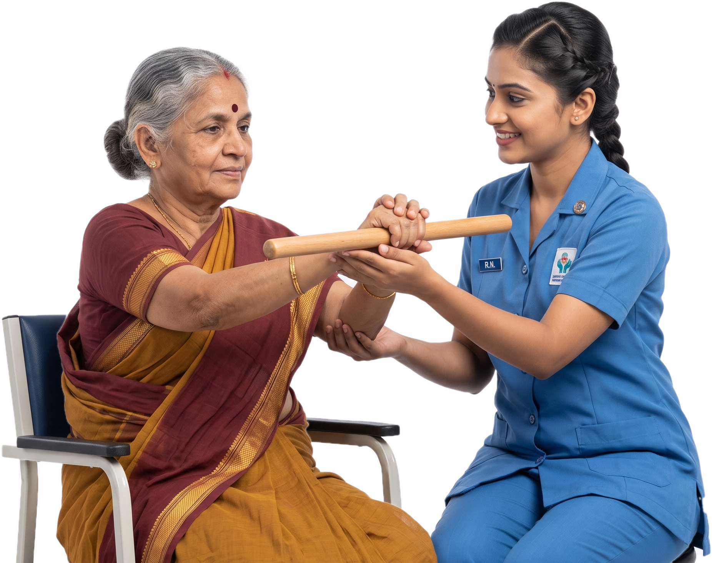
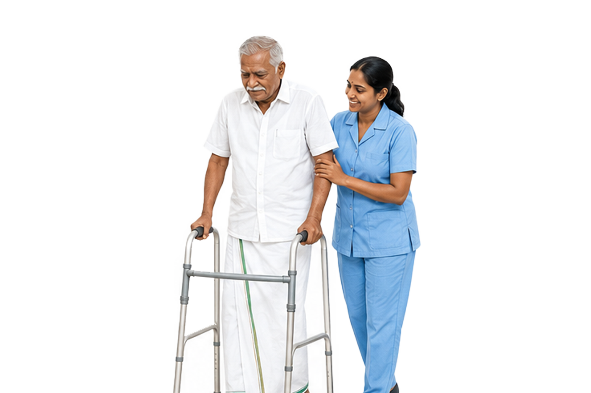
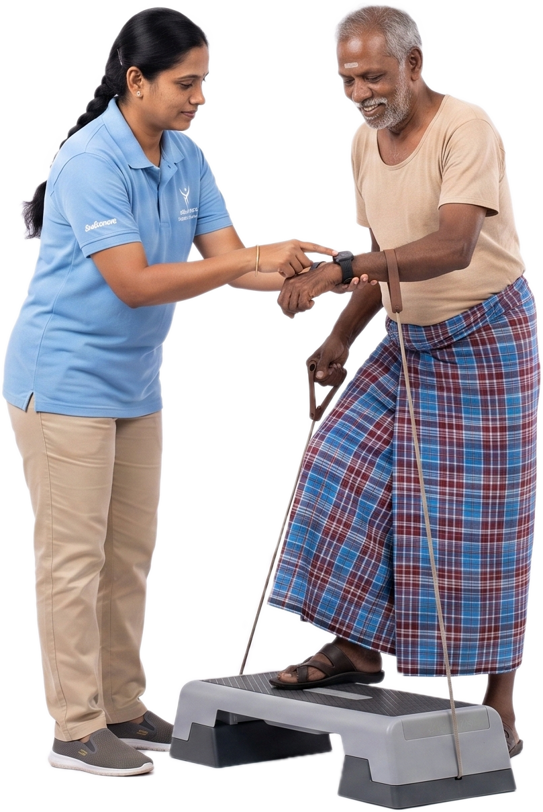

Rehabilitation care is designed to help seniors regain physical strength, functional mobility, and daily independence following major surgeries, acute illnesses, neurological events, or prolonged hospital stays.
At Asthra Senior Living Home, our rehabilitation services combine expert medical supervision, customized physical therapy, and compassionate personal support delivered either at our specialized facility or in the comfort of home in Chennai.
Our multidisciplinary team addresses a full spectrum of recovery needs, from post-operative joint strengthening and mobility training to speech therapy, pain management, and functional independence training.
We provide structured, goal-driven recovery programs tailored to individual health conditions to ensure a smooth transition from hospital to active daily life.




Recovery timelines vary depending on each individual’s clinical condition. Asthra provides tailored daily protocols to support steady, measurable progress:
